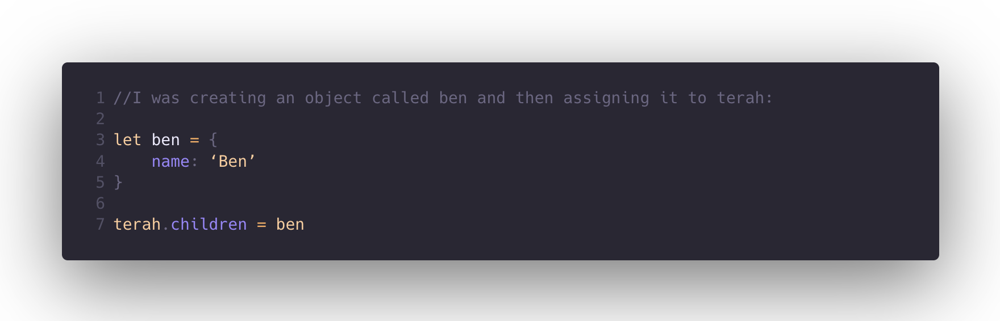
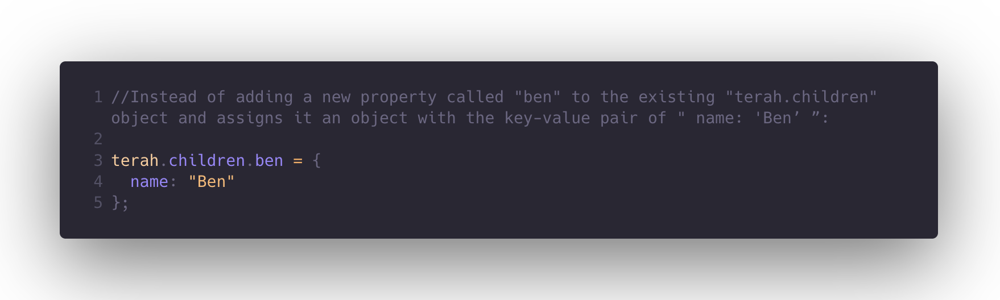

So, I had a problem adding a ”ben" property to the "terah" object's "children" property. I had to make "ben" an object with the name "Ben".
 I tried something first and went through a few different ideas I thought may work and I used google and w3 school to try get a better understanding of properties. In the end I asked my partner and he helped me to understand the differences between what I was trying to do and what the question was asking me to do.
It was frustrating, especially trying to understand what I was meant to be doing. Looking back it seems like such an easy thing so I’m a little like how did you miss that but we got there in the end.
From this problem, I learned how to add properties to objects and assign objects to other object properties. I also got a better understanding of object syntax and how to manipulate objects.
One of the test questions was to write a function called fizzbuzz that takes a number as its input and returns the number itself, unless the number is divisible by 15, 5, or 3. In those cases, the function should return the strings "FizzBuzz", "Buzz", or "Fizz”.
I started by writing out the pseudo code. I broke the problem down into smaller sub-problems. I refreshed my understanding of how the modulo operator works and I did my best.
I was really proud of myself for this one. After a quick refresher on the modulo operator I was able to write the entire function from just what I’ve learnt so far. I was feeling a little defeated being frustrated over a simple questions earlier so this was a big bounce back to realise I am taking it in and I do understand more than I think I do.
I learnt to trust myself a little more, realise I am capable and I am learning and to just take a breath, im not going to know everything today and that’s OK!
* Pseudocode 5 stars
* Trying something 5 stars
* Rubber ducky method 5 stars
* Reading error messages 3 Stars
* Console.logging 5 stars
* Googling 5 stars
* Asking your peers for help 3 stars
* Asking coaches for help 1 star
* Improving your process with reflection 5 stars
I guess whenever it seems like a simple question to me I don’t like to ask because I don’t want to seem dumb or I don’t like being wrong or I just don’t like bothering people.